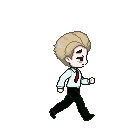
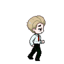
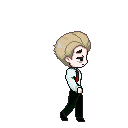
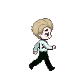
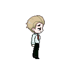
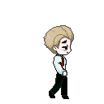
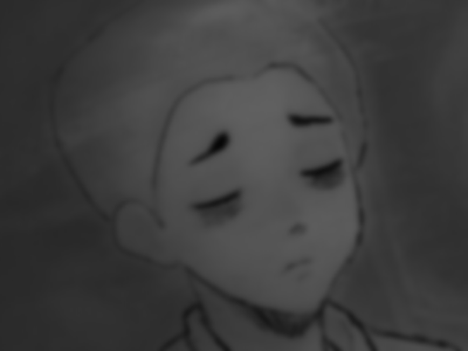
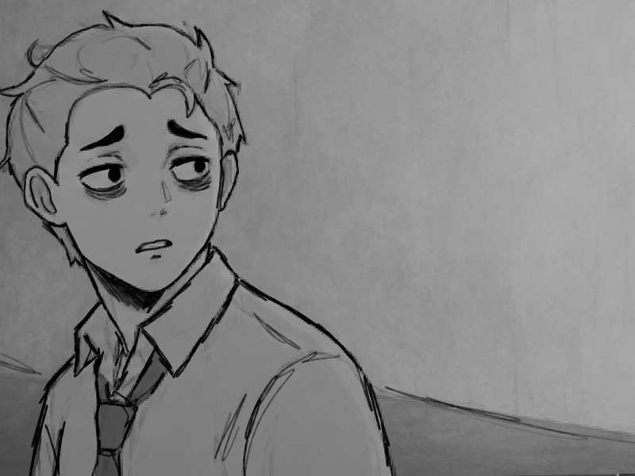

Hand-drawn 2D Art
Relive that Y2K era with retro-Windows inspired graphics, hand-drawn portraits and player sprites, and unique pixel art environments.
Surreal 2D psychological platformer
After a long day of work, you find yourself taking the same bus as always. You doze off and awake to find yourself back at work, except things aren't quite right.... the only thing on your mind now is to find your way back home.
The pitch
No Service Tonight is a short-form horror platformer focused on solving puzzles that lead you deeper and deeper into strange, surreal rooms. Each clue brings you closer and closer to a mystery you can't quite describe. Perhaps it's all connected in some weird way; that there's a deeper meaning to all this.
A story built on themes of burnout, loneliness, and disassociation, uncover the truth that's always been lying underneath the surface.
Relive that Y2K era with retro-Windows inspired graphics, hand-drawn portraits and player sprites, and unique pixel art environments.

Unravel the story behind why you're stuck without a way home, bit by bit with plenty of dialogue for players to read.

The Office, An Endless Hallway, An Abandoned Parking Garage, and... Home? Each liminal space is different from the last.

Progress through levels using strategic jumps, but don't forget to pick up clues and find your way to the right exits.
Trailer
Experience the game in this 1-minute trailer!
Design and illustrations
Sprite work, cutscene art, dialogue portraits, sanity portraits, and many many pixel art items.


The first level traps the player in familiar work spaces: cubicles, monitors, coded computers, and pop-up windows that make the office feel like it is watching.


The hallway connects the office to the parking garage, but it stretches into its own liminal space. Exit signs, access doors, relays, and repeating wall panels turn a normal corridor into a puzzle route.


The route puzzle expands the game beyond office rooms. The player hunts for map fragments while the low-sanity heartbeat, slower movement, and harder jumps make escape feel urgent.


The dreamcore level should look peaceful at first, then become the most direct confrontation with the player's doubts. It is bright, open, and emotionally wrong.








The player sprite is intentionally small against the office and hallway spaces. The simple movement frames keep the game readable while the environments do the emotional heavy lifting.





These stills carry the story outside the platforming rooms: late-night transit, returning to work, and the uneasy loop that starts the game.


Dialogue portraits let the player's inner state show before the text fully explains it. They move from calm confusion into panic as the building stops feeling ordinary.


The sanity sprites give the horror a visible progression. Each lower state makes the same character feel more exhausted, more watched, and less certain of the way home.
Player state
As the office speaks through monitors and terminals, the player's portrait changes. The full game can push that system further: unstable text, altered platform timing, unreliable route signs, and dialogue choices that become harder to trust.
The player can read clues clearly and keep a normal pace, but the office is already starting to feel personally targeted.
Further development
The complete vision is a compact, story-driven platform horror game where every new area asks the same question in a different way: do you keep searching for the route home, or let the place convince you that leaving is impossible?
Add more memories, coworker messages, and environmental clues that explain why the office has such power over the player.
Expand terminals so players can choose which route to power, creating optional risks, shortcuts, and hidden story fragments.
Make sanity affect audio, platform visibility, dialogue pacing, and the reliability of signs without making the game unfair.
Capture the final gameplay trailer, tune checkpoints, improve accessibility options, and build a cleaner ending sequence for the class presentation.
No Service Tonight can become a focused horror story about burnout, anxiety, and the strange courage of wanting to go home. The playable version shows the mechanics; this site shows the full direction.